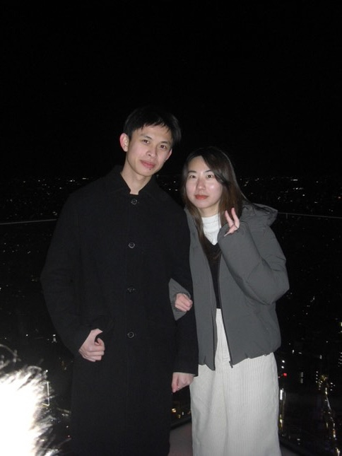
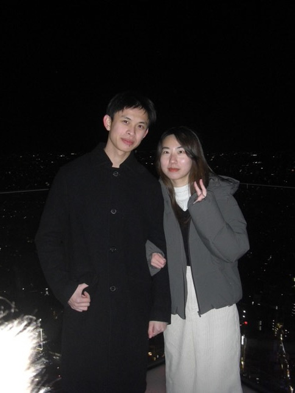

Our Journey Through Tokyo
G I N Z A


Tokyo Tower

Tsukiji Market


Asakusa


Tokyo Skytree


Shinjuku Gyoen National Garden


Kaiseki Lunch


Yayoi Kusama Museum


Shinjuku Nightlife


Ometesando


Shibuya
 

Yakiniku Dinner

Getting the stomach ready! >:]